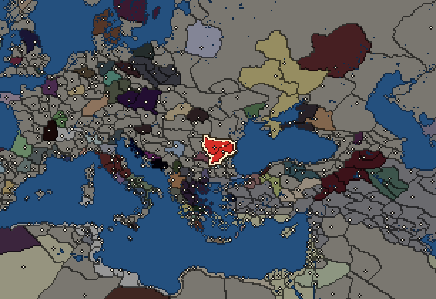
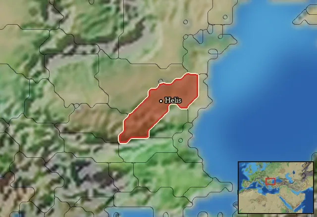

RTR: Imperium Surrectum
RTR: Imperium SurrectumGetae


- difficulty Difficult
- Dacian culture
- believes
 Thracian
Thracian - 2 settlements
- capital Helis
- 12,500 manpower
- 3 characters
- 14 faction units
- 433 regional units
The campaign brief
"War is the father of all." – Heraclitus
Dense forests, impassable mountains and a harsh climate have always protected these countries, which we call our own. In the last centuries we saw many intruders coming and going... yet only we remained, the tough people of the Getae. Once the Persians came here, powerful people led by their great king Darius. We lured them into the steppe and there they almost all died from thirst. They had to retreat, and never again would we see those warriors in their colourful pants. Then came the Greeks with thousands of settlers on their grand ships and settled down on the coast. Their intrusion into the interior of the country was successfully repelled by our ancestors, and we entered into commercial relations with the inhabitants of the new cities on the coast. Occasionally we invade their cities, together with our allies, the Scythians, from the vast steppes beyond the great rivers. However, peace usually prevails between us and the Greeks.
This does not apply to the lords of the southern countries, the Macedonians. Under their great King Alexander, they successfully invaded our homeland. He destroyed the army of our ancestors near the great river Danube through his superior skills as a general, and so they were compelled to make peace. Ten years later, however, we were able to avenge ourselves, and killed his governor Zopyrion. And the greatest victory we won against one of Alexander's companions, the new king of Thrace, Lysimachos. We captured him and his son when they tried to prevent our attacks on their territory. Our noble King Dromichaites, however, honourably released the defeated king - wanting to prevent more powerful men than Lysimachos from returning. The greatest danger to the people of our time came not from the south or east, but from the northwest. Celtic tribes had united and devastated the homeland of our neighbours in search of loot and land to settle. They moved to the south, pillaged the Greek lands and even crossed the sea with the help of the Bithynian king to get to Asia Minor. There and in nearby Thrace, they still spread fear and terror.
But now the Getae also rise again. We assemble, united under a strong king, and will rob and plunder the rich cities and temples of the Greeks. For they lie scattered on the coast and are weak and disunited. We will take sword and shield, march southwards against their walls of stone, tear them down and rob their treasures. And then we will once again come back to our wild home, which has seen many peoples come and go. But only the Getae will stay here forever...
Starting settlements
Getae begins with 2 settlements and 12,500 manpower.
| Settlement | Region | Size | Manpower | Already built | Settlement | Region | Size | Manpower | Already built |
|---|---|---|---|---|---|---|---|---|---|
| Helis (capital) | Getaia | large town | 5,000 | 9 buildings | Argedava | Ceiagisia | city | 7,500 | 11 buildings |
What is already built in each settlement
Helis, in Getaia: Governor's Villa, Wooden Palisade, Direct Rule, Region Information Scroll, Roads, Local Barter, Land Clearance (Crops), Local Garrisons, Cisterns (Sanitation)
Argedava, in Ceiagisia: Fruit Dryer (Rural), Governor's Palace, Small Stone Wall, Homeland, Region Information Scroll, Paved Roads, Local Market, River Ports, Contour Furrows (Crops), Barracks and Armoury, Sewers (Sanitation)
Starting diplomacy
At war with (1):  Tylis
Tylis
Like every faction, it is also at war with the  Free Peoples, who hold every settlement no faction does.
Free Peoples, who hold every settlement no faction does.
Homeland
Getae's homeland is 1 region. Only there can it install the Homeland government (more on homelands).

Starting characters
| Name | Role | Age | Name | Role | Age | Name | Role | Age | |||
|---|---|---|---|---|---|---|---|---|---|---|---|
| Dromichaites | General | 70 | Isanthos | General | 50 | Skyles | General | 35 |
Reforms
For every faction: Military innovations have arrived!, Second wave of military innovations have arrived!.
Units you can recruit
The same as in the main campaign.